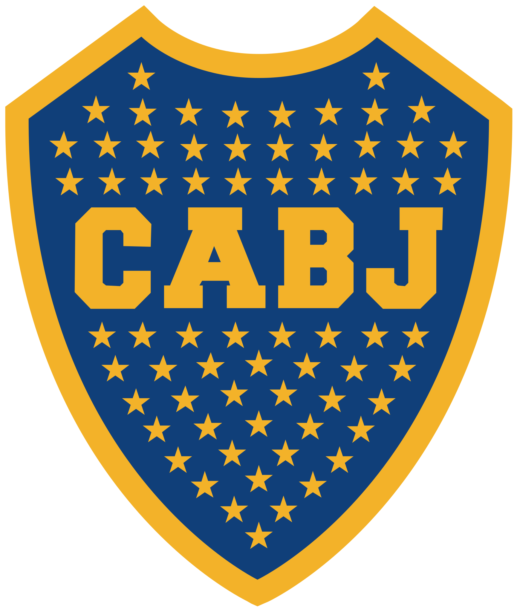

Život Diega Armanda Maradone
Prvi fudbalski koraci u faveli
Diego Armando Maradona rođen je u faveli, poznatoj kao Villa Fiorito.
Kao i skoro svaki meštanin favele, odrastao je u težim uslovima, u ovom slučaju
zajedno sa svojim roditeljima i četvore braće i sestara. Roditelji su radili teške
fizičke poslove kako bi prehranili svoju porodicu.
Diego je kao i svako drugo dete u faveli igrao fudbal na ulici pokazivajući
neverovatan talenat sa jako malo godina u to vreme. Njegova neverovatna veština,
driblinzi i umeće sa loptom privlačili su pažnju čak i onih koje fudbal nije zanimao ni u kom segmentu.
Kako se dobar glas brzo širi, njegov talenat su primetili određeni ljudi koji su
u tom momentu mogli da utiču da zaigra u pravom klubu, gde je kao tinejdžer
zaigrao za Argentinos juniors i ubrzo počeo da igra i za prvi tim istog kluba.
Za kratak period postao je ključni igrač.
Internacionalna karijera
Maradona je svojom internacionalnom karijerom ostavio neizbrisiv trag u svetu fudbala. Iz Argentino
Juniorsa je prešao u Bocu Juniors, gde je briljirao i privukao pozornost evropskih klubova.
Iz Boce prešao je u Barcelonu, upamćen kao jedan od najjačih transfera tog vremena.
Iako se u Barceloni nije dugo zadržao, ipak je ostavio neki trag. U Barci je osvojio
Kup Kralja i Superkup.
Transfer u Napoli bio je revolucionaran. Maradona je postao glavni i odgovorni
za uspon Napolija na svetsku scenu. Tamo je osvojio dva prvenstva Italije. Postao je
heroj grada i "zaštitno lice istog."
U navigacionom meniju imate Fenomen Maradone u Napoliju
pa tamo možete da pročitate i saznate više o tome.


Osvojivši FIFA Svetsko prvenstvo 1986. godine s argentinskom reprezentacijom,
postao je nesporna legenda fudbala. Njegov legendarni dribling, posebno
u čuvenom "božanskom driblingu" protiv Engleske, gde je prošao kroz nekoliko igrača pre
nego što je postigao gol, ostala je nezaboravna scena u istoriji fudbala.
Osim svojih uspeha na terenu, Maradona je osvojio brojna
individualna priznanja, uključujući Zlatnu loptu za najboljeg igrača sveta.
Njegovo ime je uvršteno u Fifinu Kuću slavnih, gde će zauvek biti prisutan kao jedan od
najvećih fudbalera u istoriji.
Maradonina ikonska figura nije se zaustavila samo na fudbalskom terenu.
Postao je kulturni fenomen, simbol borbe, strasti i genijalnosti.
Njegova živopisna ličnost i dramatičan životni put, oblikovan teškoćama
i trijumfima, privlače obožavaoce širom sveta koji se dive njegovom nasleđu i pronalaze
inspiraciju u njegovoj strasti prema igri.
Maradona je bio glas i simbol pravde za koju se i borio. Njegovo nasleđe će živeti kroz
generacije obožavaoca koji će se sećati ne samo njegovih
fudbalskih podviga, već i njegove neumorne borbe za ono u šta veruje.
Kontroverze vezane za Maradonu i njegov život
Diego Maradona nije bio poznat samo po svojim fudbalskim veštinama,
već i po svojim turbulentnim životom i kontroverznim potezima.
Jedna od ključnih karakteristika Maradoninog života bila je slobodan
način vođenja života. Bio je poznat po svojim skupim automobilima,
luksuznim kućama i ekskluzivnim provodima, sukobima sa novinarima i sl.
Maradona je često bio meta medija zbog svojih izjava i postupaka...
Imao je problema sa drogom, što je često dovodilo do finansijskih i pravnih
problema.
Sportske kontroverze i ulazak u legendu
Sportske kontroverze su takođe obeležile Maradoninu karijeru.
Najpoznatiji incident je njegov gol protiv Engleza na SP u Meksiku
1986. godine, koji je postigao "Božjom rukom", što je bio nedozvoljen gol, ali ipak
postignut i uračunat.
Taj potez ostao je kontraverzan i obišao je ceo svet svojom moću.
Usled ovim kontraverzama i izazovima, Maradona je ostao ikona u svetu fudbala zauvek.
Njegova strast prema igri i neverovatan talenat preovladali su njegove "greške"
i doprineli nezaboravnoj karijeri najvećeg među najvećima.
Kultura, inspiracija, društveno angažovanje
U srcima argentinaca, Maradona je predstavljao mnogo više od samog
sportskog heroja, bio je simbol nacionalnog ponosa i identiteta.
Njegovi uspesi na terenu donosili su radost i nadu milionima Argentinaca,
posebno tokom teških vremena političke i ekonomske krize.
Njegov uticaj se protezao i izvan granica Argentine, postajući inspiracija i idol
za generacije fudbalera širom sveta. Njegova genijalnost na terenu
podstakla je mnoge mlade igrače da sanjaju velike snove i da se bore za njih.
Maradona je nastavio svoj angažman kao
humanitarni radnik i aktivista. Kroz svoje aktivnosti, podržavao je brojne humanitarne
inicijative i borio se za prava marginalizovanih grupa. Njegov angažman u društvenim
pitanjima dodatno je utvrdio njegovu poziciju kao ne samo sportske, već i moralne gromade.
Maradona je bio simbol strasti, borbe i neustrašivosti. Njegovo nasleđe
će živeti kroz generacije, kako u svetu fudbala
tako i u širim društvenim i kulturnim sferama.